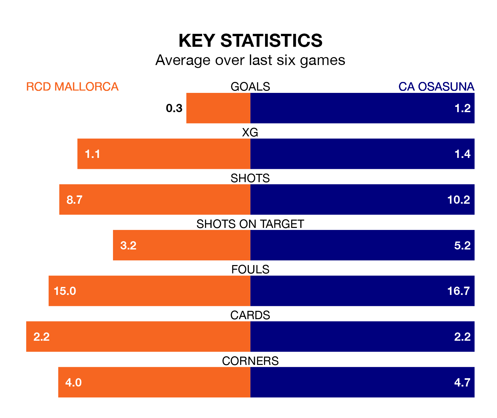

CA Osasuna travel to RCD Mallorca on late Thursday in La Liga.
The visitors come into the game on the back of a win in their last match, having beaten Rayo Vallecano 1-0 at home, with a goal from Raúl García de Haro.
RCD Mallorca, meanwhile, drew their last match, 0-0 against Almería.
In the last 10 years, Mallorca and Osasuna have played each other on 12 occasions. Mallorca won three of them, Osasuna five, and they drew four times.
On average, RCD Mallorca scored 1.5 goals and CA Osasuna 1.6 in those matches.
Their last meeting was on March 31, when they played out a 0-0 draw.
With Predrag Rajković between the sticks, Mallorca can rely on one of the league's safest pair of hands. He has kept six clean sheets in his 17 appearances this season in La Liga.
In Osasuna's net, Sergio Herrera has five clean sheets in 14 games. He has conceded a goal every 69 minutes, 20% more often than the 81 minutes between goals for Rajković.
RCD Mallorca are 16th in the table after 17 games, of which they have won two and drawn nine, earning 15 points.
CA Osasuna are four places ahead of the hosts in 12th, with five wins and four draws putting them on 19 points.
With 14 goals in 17 games so far this season, Mallorca are the league's joint-third-lowest scorers with 0.8 goals per game. But they are conceding fewer than average too, letting in 20 goals at a rate of 1.2 per game.
The away team are also below average scorers, with 1.1 goals per game, compared to a league average of 1.3. They have conceded 1.5 goals per game.
Mallorca are in disappointing form in La Liga, with one win and three draws from their last six games.
And also with a win and three draws over that period, Osasuna's form is identical – they have both taken six points from 18.
Thursday's match will be refereed by Mario Melero López, who has taken charge of six La Liga games so far this season, issuing no red cards and booking 26 players. He has awarded one penalty.
The last Mallorca game Melero López refereed was a 2-2 away draw with Rayo Vallecano on September 30. He is yet to oversee a match featuring Osasuna this season.
Updated: 12:43, 20/12/23